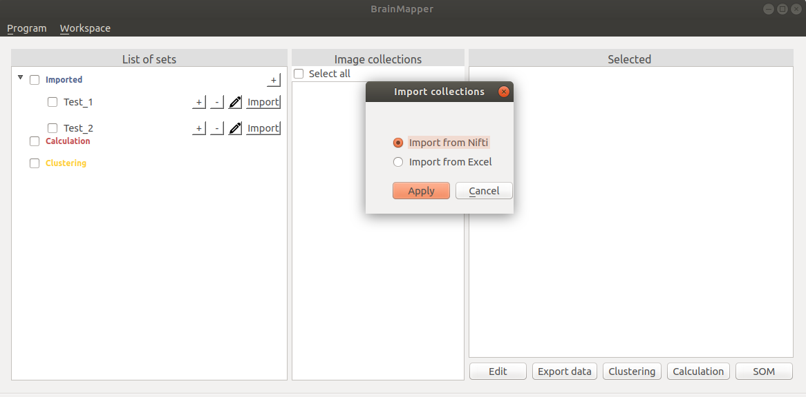

USER MANUAL
Welcome to the user manual for the BrainMapper software.
Welcome to the user manual for the BrainMapper software.
Contents - NIfTI Handling
Go back to home pageWhen you launch the software, a set named with the current date is created. It will prevent name problems (when some sets have the same name).
To create a new set, you can select the button "+".
You have to choose and write the name of your new set. Please, select a name not yet used.
In the case of the name always used, you have a warning message.
Deleting a set is possible. You have to select the button "-" next to the name of the set between the "+" and the pencil.
Before deleting a set, you will have a warning window to assure you really want to delete it.
Each set works the same way. You will have to click on the pencil logo to access to the rename pop up.

You will not be able to name two collections the same way.
Furthermore, the software prevent you to add unauthorized symbols to the name of your collection, such as : "/",";"...
Each set can have an infinity of sub sets. It works exactly like a folder hierarchy. Each set, including the one that contains others, can contain some collections of images and data.
Each set (even if its a sub set) works the same way. You click on the "+" to access to the sub set pop up.
You will not be able to name two sets the same way. Furthermore, the software prevent you to add unauthorized symbols to the name of your set, such as : "/",";"...
When you launch the software, a set named with the current date is already created. That means, when you create a collection, it will be added to the current set (named with the current date in this case).
A collection is an object where we stock the data. Usually, the data are some images, that's why we will name the Collection object as an Image Collection.
There are two ways to create a collection : with an Excel file containing the points and some NIfTI files. These two options are available in selecting the button "Import".

When you add a collection, it will be created and shown in the home page, related to its set.
The first line of the CSV contains the header of each column. These are :
If you choose to create a collection with some NIfTI files, you will have to select them with a file browser.
To work on your data using BrainMapper, you have to select the collections you want to work on. To do so, just click on the collection you want (the selected collections are ticked). After selecting a set, you have to click on the collections that are in the column Image collections and you want.
Note that you can select collections even if they are not in the same set!
Once you have selected collections, you can edit them by using the button "Edit" at the bottom.
In this new page, you will see the list of your selected collections on the left side.
On the left side, you can see your selected collections and can select the name of the one you want to edit.
To rename the selected collection, you have to click on the pencil logo to access to the rename pop up.
You will not be able to name two collections the same way.
Furthermore, the software prevent you to add unauthorized symbols to the name of your collection, such as : "/",";"...
Even if your collection is created, you are still able to add some data into it. You just have to click on the button "+". Then, you will add your NIfTI files the same way you added them to create the collection.
The new images will immediatly be added to the collection and will appear in the list of images.
To remove one or several images from a collection, you have to click on the button "-" next to the name of the image.
In order to quickly see what the chosen image contains, it is possible to click on the eye button.
A 3D visualization appears in a browser. You can then manipulate the visualization by clicking, moving the mouse in it or by scrolling.
In order to see what the collection contains, it is possible to click on the eye button.

A 3D visualization appears in a browser. You can then manipulate the visualization by clicking, moving the mouse in it or by scrolling.
You can delete a collection by clicking on the button "-" next to the name's collection.
This action is irreversible and takes effect immediately.